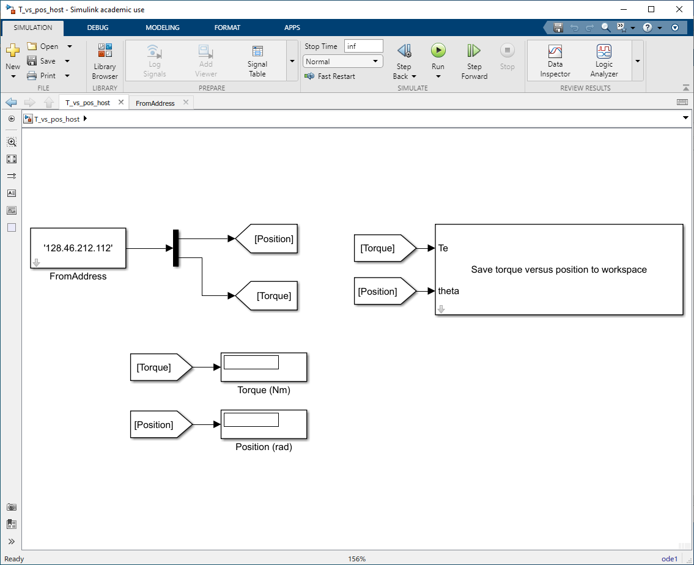
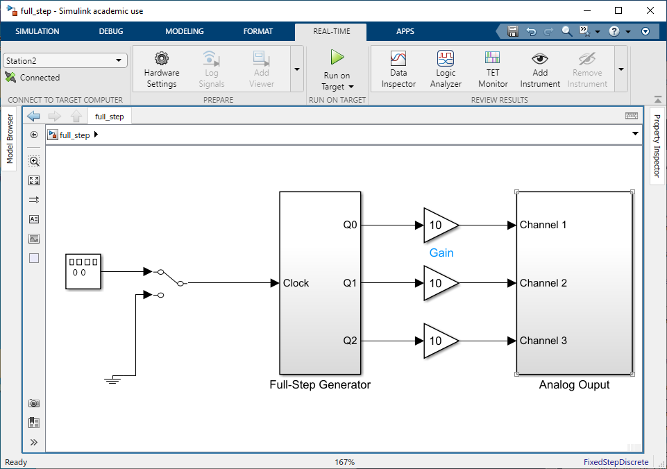
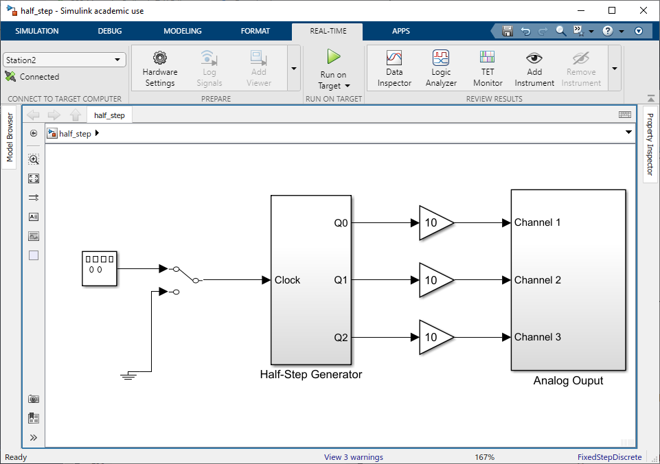

In this experiment, the electromechanical characteristics of a
variable-reluctance stepper motor will be investigated. The static
torque-versus-position characteristics will be measured and compared with
analytical predictions. We will also examine steady-state operation at constant
step rates and experimentally establish the maximum start rate and maximum step
rate.
Carefully review the lab and postlab sections. Keep the postlab questions in
mind when performing the experiments. Make sure you keep accurate notes in your
lab notebook in order to be able to answer postlab questions.
In the first part of the lab, we will measure the torque-versus-position
characteristics of our stepper motor. The basic setup is the same as in last
week’s lab (Figure 4b-1). The given motor is a 3-phase device with polarity
markings defined as follows:
The torque-versus-position will be measured using the pre-built Simulink
models T_vs_pos_tgt.slx and
T_vs_pos_host.slx. The
top-level views of these models are shown in Fig. 6.2 and
Fig. 6.3, respectively. Connect the analog output of the
torque transducer (red wire) to Analog Input 1. Set the range of
Analog Input 1 to +1 V (middle position). The output of the
position transducer should still be connected to the 25-pin Digital Input
port.
Fig. 6.2 Simulink target model T_vs_pos_tgt.slx for measuring torque versus
position.#

Fig. 6.3 Simulink host model T_vs_pos_host.slx for measuring torque versus
position.#
Open T_vs_pos_tgt.slx. Build, connect to target, and run this
model. Connect phase \(a\) to channel 1 of the patch panel. A successful build
will be noted in the View Diagnostics window.
The simulation that will run on the host computer is configured as a
Normal simulation. This simulation samples the output of blocks
in the target computer simulation, T_vs_pos_tgt.slx. The position and
torque of the stepper motor are displayed in digital displays of the model
window.
Zero out the torque transducer by pressing the “tare” button before running
the host simulation. Allow the rotor to settle to its equilibrium position.
In the model window of T_vs_pos_host.slx, select Run to
begin the host simulation. Record the position of the rotor from the numeric
display. Using your hand, rotate the motor rotor slowly and as smoothly as
possible from the encoder end of the torque transducer. As the rotor rotates,
the computer calculates a new value of torque for each position the motor
rotates through and updates the digital displays of the host simulation.
After rotating the rotor through one complete revolution, stop the host
simulation. Use the following Matlab command line to save the data:
steptorq('ta.mat',position,torque)
The resulting data file ta.mat can be used for subsequent plotting
and analysis using Matlab.
Disconnect the patch panel output from phase \(a\) and connect it to phase \(b\).
Restart the host simulation. Measure the torque versus position of the
phase-\(b\) winding as done with the \(a\) winding. Again, save the data in file
tb.mat. Repeat the previous steps for the phase-\(c\) winding, saving
the data in tc.mat. Load ta.mat into MATLAB. The data will
be stored as 2-column matrices of position (radians) and torque (N-m).
Separate the data into vectors of torque and position.
qrma=positiontorquea=torque
Repeat these MATLAB commands for phases \(b\) and \(c\) by loading
tb.mat and tc.mat, substituting the appropriate letter for
the a in qrma and torquea. Plot the three torque
curves.
plot(qrma,torquea,qrmb,torqueb,qrmc,torquec)
Compare the plotted results with those predicted in the previous Postlab by
plotting them on the same axis. Try to resolve gross discrepancies. Print the
results and save your MATLAB workspace by typing save lab6_te.
Copy the file lab6_te.mat to your ECN account and email it to your
partner. You will need this file to complete the post lab.
6.3.2. Steady-state operation at a constant stepping rate#
Open the Simulink target model full_step.slx, shown in Fig. 6.4.
Excite the three stator phases with full-step square waves at a rate of \(10\)
step/sec (phase-\(a\) winding is excited with a positive DC voltage, then phase
\(b\), then phase \(c\), then phase \(a\), etc.) by setting the frequency of the
signal generator to \(\qty{10}{\hertz}\) with an amplitude of \(1\). Start the
target computer by connecting to target and pressing Run on Target. Clicking the manual switch should cause the motor to start rotating.
Since this a three-phase motor, the frequency of each of the applied stator
voltages (i.e. frequency of phase \(a\), \(b\), or \(c\)) is \(1/3\) the step rate.
Based upon the known step length, what is the corresponding average rotor
speed (in rad/sec) of the \(10\)-\(\hertz\) step rate?

Fig. 6.4 Simulink model for operation at constant stepping rate, full\_step.slx.#
Using the digital oscilloscope and BenchVue, record and print the
phase-\(a\) voltage, phase-\(b\) voltage, phase-\(a\) current, and phase-\(b\)
current in the full stepping mode. Do you see any similarity to the current
waveform and the current waveform for the solenoid pull-in measured in
Electromagnetic Forces (A)? Be prepared to explain the
similarities/differences in the postlab.
Apply a small load torque (pressing on the pulley with your finger) to the
rotor, but not so large as to cause the motor to fall out of step. Note any
differences between the loaded and unloaded current waveforms.
Which direction does the motor turn for the \(abc\) step sequence (CW or CCW
with respect to the connected motor shaft)? What happens if one of the motor
phase’s polarity is reversed (say phase-\(a\) polarity). What happens if two
phases (say phases \(a\) and \(b\)) are swapped?
With the rotor initially at rest (\(0\) steps/sec), change the step rate to
\(10\) steps/sec. Did the rotor fall out of step? If not, stop the rotor and
repeat the step change of the step rate from \(0\) to \(20\) steps/sec. Repeat
this experiment in increments of \(10\) steps/sec until you have established
the maximum step rate that can be suddenly applied to the motor (i.e. how big
a step in step rate) from rest. Note: when the motor does not rotate at the
applied step rate, this is called “falling out of step”.
With the rotor initially at rest (\(0\) steps/sec), change the step rate to
\(10\) steps/sec. Increase the rotor step rate (without stopping) in increments
of \(10\) steps/sec until you have established the maximum step rate that the
motor can sustain. How does this rate compare with the initial step rate
measured in the previous section.
Stepper motors can be run in half-step and full-step modes. Full stepping is
accomplished by driving the motor with only one phase energized at a time
(\(a\)-\(b\)-\(c\)-\(a\)-…). Half stepping is accomplished by overlapping two
phases (\(a\)-\(ab\)-\(b\)-\(bc\)-\(c\)-\(ca\)-\(a\)-…). By energizing two phases at a
time, the stepper motor will effectively have twice as many steps due to the
\(ab\), \(ac\), and \(bc\) half-steps between the \(a\), \(b\), and \(c\) full steps. The
half-step mode will give the motor more step resolution and make the motor
run smoother but requires more power due to each phase being driven longer.
Open the Simulink model half_step.slx, shown in Fig. 6.5.
Using the digital oscilloscope and BenchVue, record and print the
phase \(a\) voltage, phase \(b\) voltage, phase \(a\) current, and phase \(b\)
current in the half-stepping mode. What is the duty cycle of each phase for
half stepping (i.e. what percent of time each phase on?). What is the duty
cycle for full stepping?

Fig. 6.5 Simulink target model for half-step operation, half_step.slx.#
Compare the measured and predicted torque-versus-rotor-position
characteristics. Specifically, superimpose the phase-\(a\) measured and
predicted torque versus position on the same plot (make sure units are the
same). Try to explain any discrepancies.
What is the difference between half stepping and full stepping? Consider the
relationships between the phase \(a\), \(b\), and \(c\) voltages.
What happened when the polarity of phase \(a\) was reversed? Explain briefly?
What happened when phases \(a\) and \(b\) were swapped? Explain briefly.
Discuss the shape of the phase-\(a\) current waveforms for half-step and
full-step modes. Compare (qualitatively) with the results of Electromagnetic Forces (A).
What factors might influence the maximum start rate and maximum step rate
(i.e. how might we increase the achievable step rate)?

{kind=link}
{kind=link}